01
Finanzen an einem Ort
Einnahmen, Ausgaben, regelmäßige Fixkosten und Monatsbudgets in einer übersichtlichen Oberfläche verwalten.
Monster Digital Solutions präsentiert
Deine Finanzen. Deine Kontrolle. Deine Daten. Statt ständig zwischen Tabellen, Verträgen und Rechnungen zu wechseln, bündelst du deine Finanzplanung in einer einzigen Windows-Anwendung.
Vom einfachen Haushaltsüberblick bis zur vorausschauenden Finanzplanung mit Krediten, Sparzielen und Vertragsfristen.
Warum Monster Finanzmanager?
Ein Finanzprogramm soll dir nicht nur zeigen, was bereits ausgegeben wurde. Es soll dir helfen, kommende Zahlungen frühzeitig zu erkennen und Entscheidungen besser vorzubereiten.
Einnahmen, Ausgaben, regelmäßige Fixkosten und Monatsbudgets in einer übersichtlichen Oberfläche verwalten.
Du entscheidest, welche Buchungen du einträgst. Keine direkte Verbindung zu deinem Bankkonto erforderlich.
Deine Finanzdaten werden lokal auf deinem Windows-PC gespeichert. Für Lizenzaktivierungen kann eine Internetverbindung nötig sein.
Wiederkehrende Ausgaben lassen sich mit Fälligkeiten und Zahlungsintervallen organisieren – damit weniger untergeht.
Plane, wie viel für Lebensmittel, Mobilität und Freizeit zur Verfügung stehen soll, und erkenne Abweichungen früher.
Geplante 12-Monats-Lizenzen für bis zu zwei PCs. Nach Ablauf entscheidest du selbst über eine Verlängerung.
Mehr Möglichkeiten mit Pro
Die Pro-Version richtet sich an Menschen, die nicht nur Einnahmen und Ausgaben festhalten, sondern aktiv planen möchten.
Erkenne auf Basis deiner erfassten Daten, wie sich dein Finanzspielraum in den kommenden Monaten entwickeln könnte.
Fälligkeiten und regelmäßige Zahlungen übersichtlich darstellen – für einen besseren Blick auf anstehende Belastungen.
Raten, Restschulden, Tilgungspläne und Sondertilgungen nachvollziehen. Prüfe, wie sich zusätzliche Zahlungen auswirken könnten.
Vorhandene Buchungen aus unterstützten Dateien lokal übernehmen. Duplikaterkennung und Kategorisierung erleichtern den Abgleich.
Vertragsdaten und wichtige Fristen verwalten, damit Verlängerungen oder Kündigungstermine nicht unbemerkt bleiben.
Für größere Anschaffungen, Versicherungen oder unregelmäßige Ausgaben gezielt Geld einplanen.
Regelbasierte Hinweise zu deinen erfassten Finanzen – ohne deine Konten mit einem externen Banking-Dienst zu verbinden.
Monatliche Übersichten als PDF aufbereiten, um Entwicklungen leichter nachzuvollziehen oder für dich zu archivieren.
Nicht nur auf den Monatsabschluss schauen: den voraussichtlichen Verlauf deiner verfügbaren Mittel im Blick behalten.
Die dargestellten Funktionen entsprechen dem vorgesehenen Produktumfang. Während der Beta-Phase können einzelne Funktionen noch überarbeitet werden.
Einblicke in die Software
Entdecke die Benutzeroberfläche und die wichtigsten Funktionen. Klicke auf einen Screenshot, um ihn in voller Größe zu öffnen. Die Abbildungen stammen aus der Beta-Version.
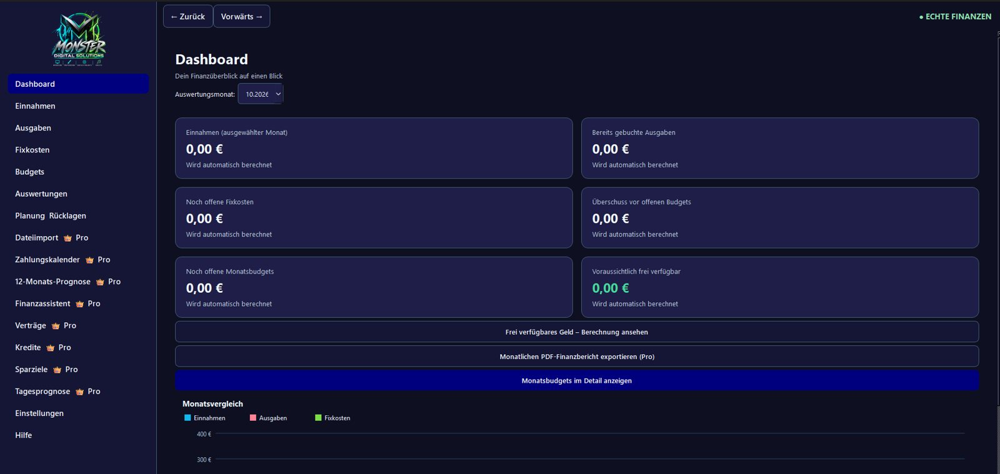
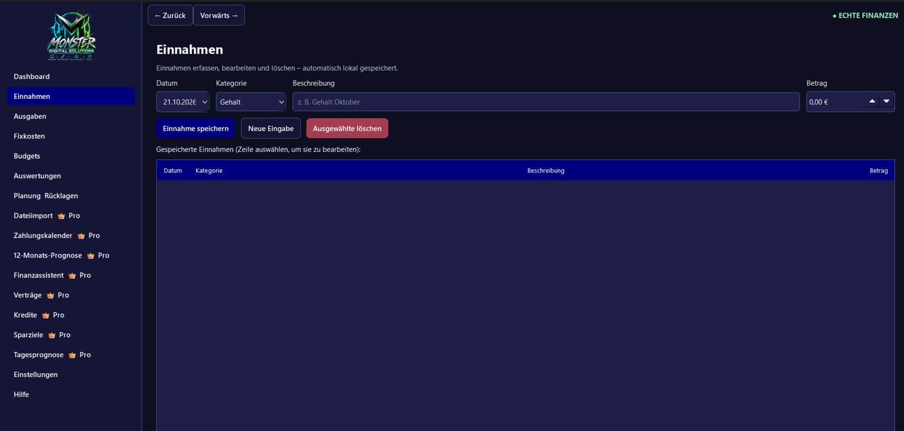
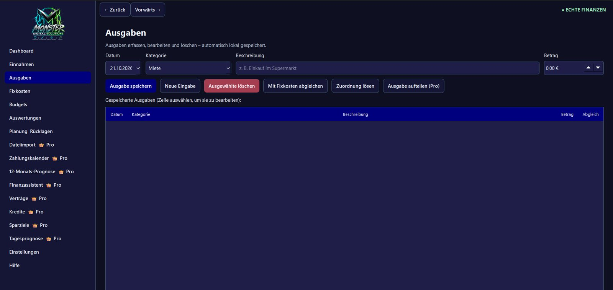
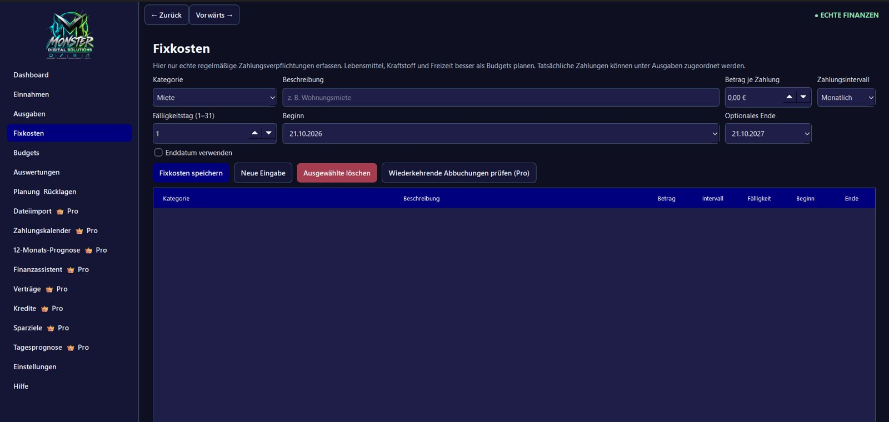
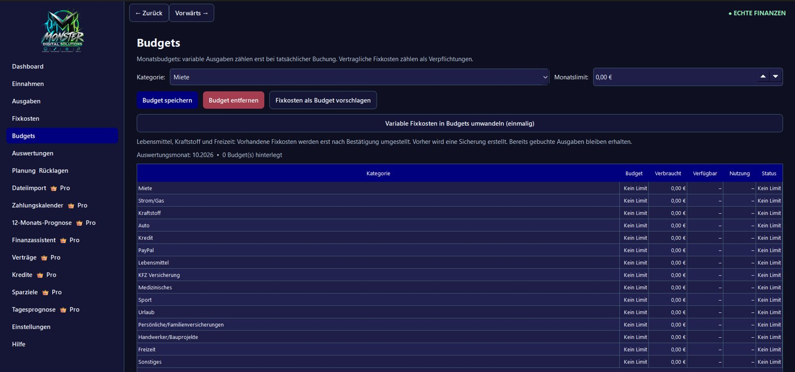
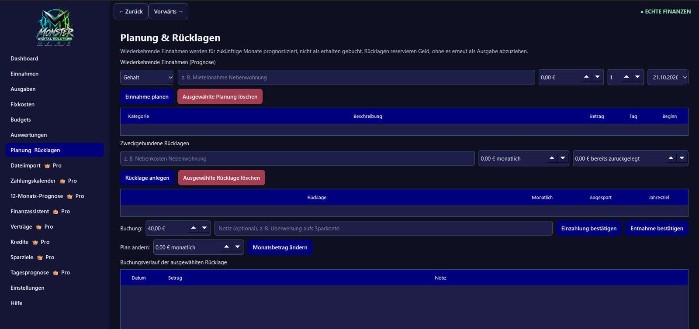
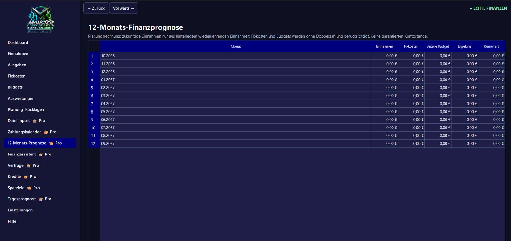
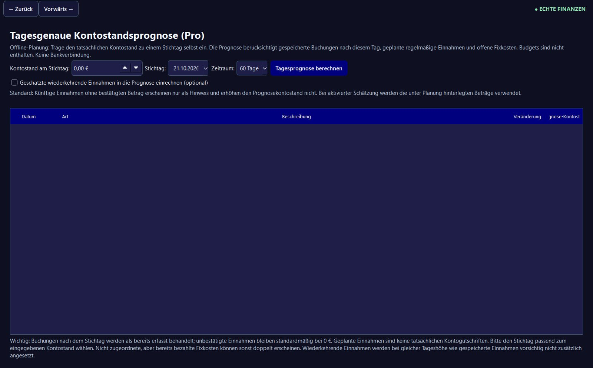
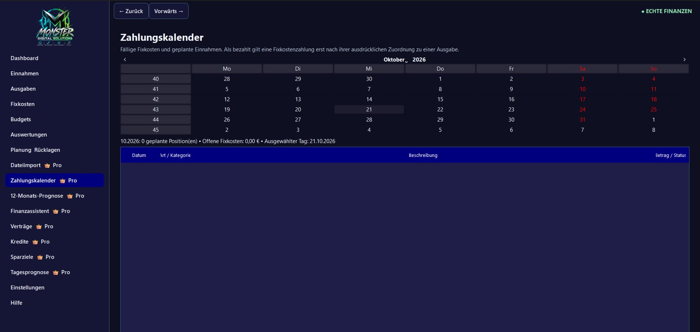
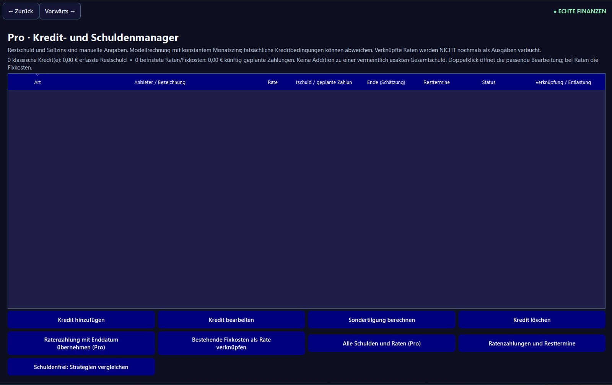
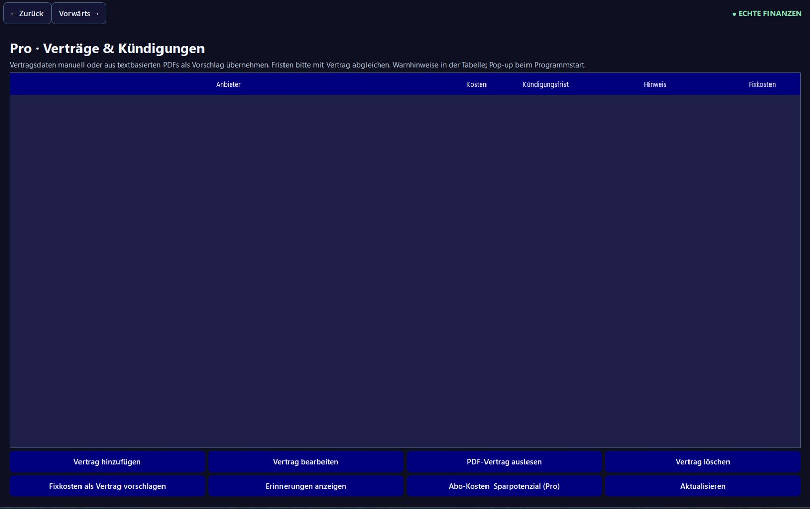
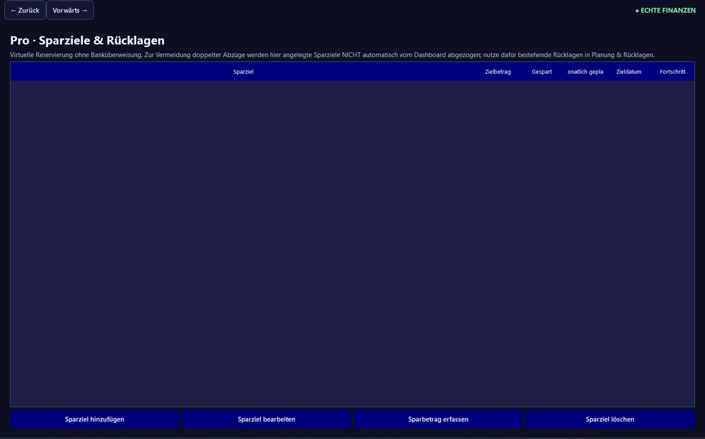
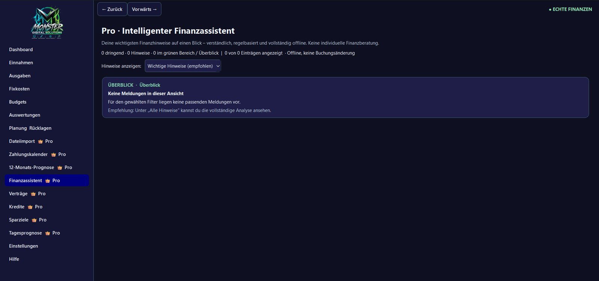
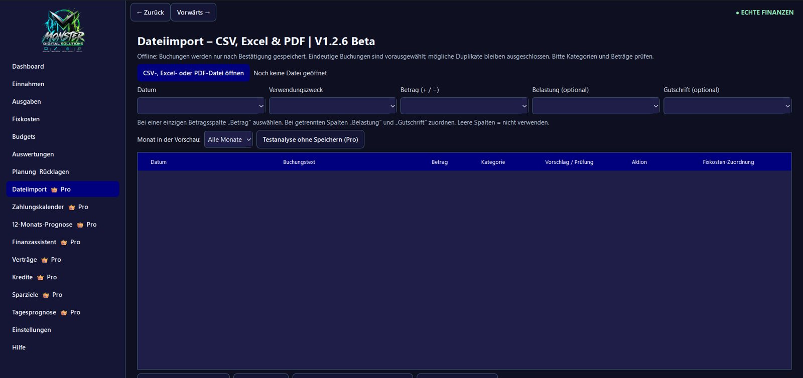
Einmal entscheiden. Zwölf Monate nutzen.
Die Preise beziehen sich auf die geplanten 12-Monats-Lizenzen. Es gibt keine automatische Verlängerung und derzeit keine Bestellmöglichkeit.
Für alle, die Einnahmen, Ausgaben, Fixkosten und Budgets geordnet verwalten möchten.
Für alle, die zusätzlich Kredite, Verträge, Rücklagen und die finanzielle Zukunft planen möchten.
Der Unterschied liegt nicht nur in zusätzlichen Diagrammen: Pro erweitert die reine Haushaltsübersicht um konkrete Planungswerkzeuge. Du kannst beispielsweise einen Kredit samt Sondertilgung durchrechnen, kommende Zahlungen im Kalender betrachten und Rücklagen für größere Ausgaben planen. Ob sich der Aufpreis lohnt, hängt davon ab, welche dieser Funktionen du tatsächlich nutzt.
Preisunterschied: 24,00 € für 12 Monate – rechnerisch 2,00 € pro Monat.Funktionsvergleich
| Funktion | Standard | Pro |
|---|---|---|
| Einnahmen, Ausgaben, Fixkosten | ✓ | ✓ |
| Dashboard und Auswertungen | ✓ | ✓ |
| Monatsbudgets | ✓ | ✓ |
| Lokale Finanzdaten | ✓ | ✓ |
| CSV-/Excel-/PDF-Import | — | ✓ |
| Zahlungskalender | — | ✓ |
| 12-Monats- und Tagesprognose | — | ✓ |
| Kreditmanager & Sondertilgungen | — | ✓ |
| Verträge & Kündigungsfristen | — | ✓ |
| Sparziele & Rücklagen | — | ✓ |
| Finanzassistent | — | ✓ |
| PDF-Monatsberichte | — | ✓ |
Vergleich des geplanten Funktionsumfangs. Änderungen bis zur Veröffentlichung vorbehalten.
Häufige Fragen
Nein. Monster Finanzmanager ist auf lokale Finanzverwaltung ohne direkte Bankanbindung ausgelegt. In Pro können unterstützte Dateien importiert werden.
Die Finanzverwaltung ist für die lokale Nutzung auf Windows ausgelegt. Für die Lizenzaktivierung und gegebenenfalls Lizenzprüfungen kann eine Internetverbindung erforderlich sein.
Nein. Geplant sind 12 Monate Laufzeit ohne automatische Verlängerung. Eine weitere Nutzung nach Ablauf erfordert gegebenenfalls eine neue Lizenz.
Die geplante Lizenz erlaubt bis zu zwei PCs. Die Aktivierung erfolgt mit einem persönlichen Lizenzschlüssel.
Nein. Monster Finanzmanager befindet sich derzeit in der Beta-Testphase. Ein Veröffentlichungstermin steht noch nicht fest. Bestellungen und Downloads sind auf dieser Seite bewusst deaktiviert.
Nein. Berechnungen, Prognosen und Hinweise dienen der persönlichen Planung und ersetzen keine individuelle Finanz-, Steuer- oder Rechtsberatung.
In Entwicklung
Wir testen und verbessern derzeit die Software. Sobald sie veröffentlicht ist, werden hier die Bestell- und Downloadmöglichkeiten ergänzt. Bis dahin kannst du dich in Ruhe über die geplanten Funktionen informieren.
← Zurück zum Shop